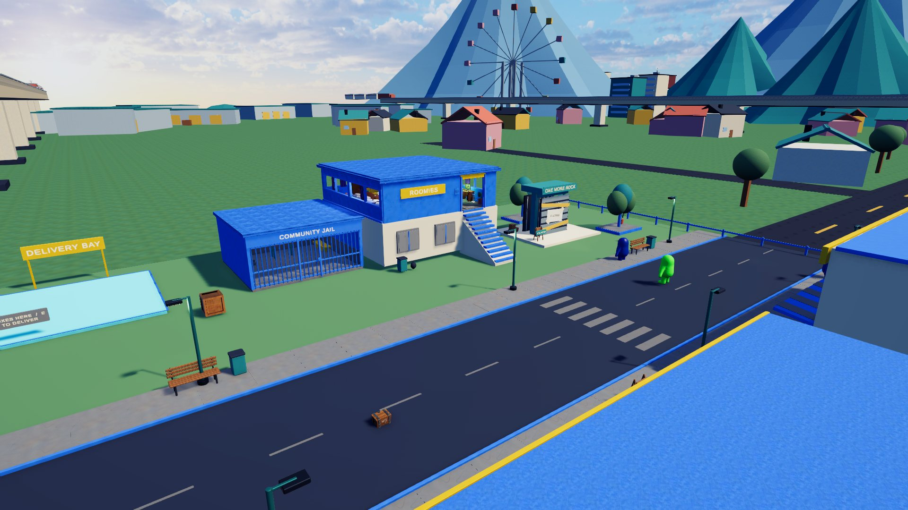
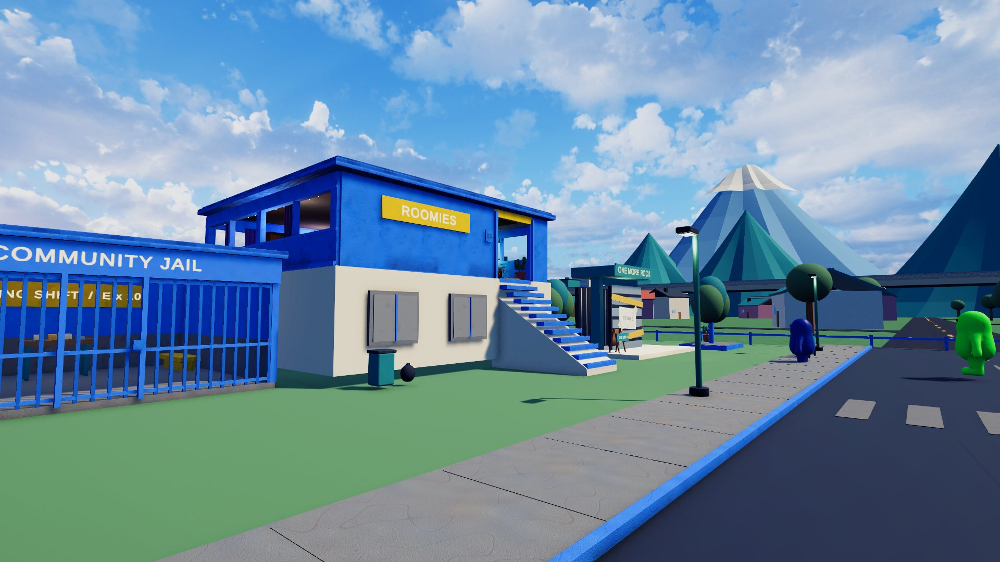

町の画質の改善（素材の型・ベベル・明かりと朝夜）
左から段階の順。同じカメラ・時間帯・解像度（1920×1080）で撮っています。画像を押すと原寸で開きます。HUD とメニューには画面の仕上げをかけていません。
- 前 部屋の改善まで：部屋・タイトルの改善（段階0〜4）を入れた状態。町は元の色の素材のまま
- 1 素材の型：町の色の素材を部品の名前で型に振り分け（窓・柱・道・屋根・木・葉・地面など）。窓ガラスは明るい空色、コンクリートのひびは控えめ
- 2 ベベル：町のプレハブ 310 部品。柱・梁・窓枠・階段・屋根は弱、看板・木箱・扉・カウンターは中、袋類は強。道・地面・ガラス・線・文字は丸めない
- 3 明かりと朝・夜：街灯 1→4（暖色）、夜の月明かり 0.12→0.25、夜だけ月明かり色の補助の光3つ。朝は街灯と補助の光を消す（RoomTimeOfDayLighting）
重さ（Play Mode・GameRoom・エディタ上）
| 段階 | フレーム時間 | 三角形 | ドローコール | SetPass |
|---|---|---|---|---|
| 前（部屋の改善まで） | 約9.1ms（8.0〜10.2） | 約129万 | 約2,270 | 168〜169 |
| 1 素材の型 | 未計測（素材の付け替えだけ） | — | — | — |
| 2 ベベル | 約9.9ms（7.8〜14.9）※ぶれ大 | 約135万（+6万） | 約2,410 | 178 |
| 3 明かり | 約8.8ms（7.3〜10.3） | 約135万 | 約2,410 | 178〜179 |
町・通り（朝）


町・通り（夜）


町・店（朝）


町・店（夜）


町・見下ろし（朝）


町・見下ろし（夜）


町・階段のアップ（朝）


町・階段のアップ（夜）


町のベベルの強さ（見下ろし）

町のベベルの強さ（通り）
